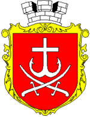
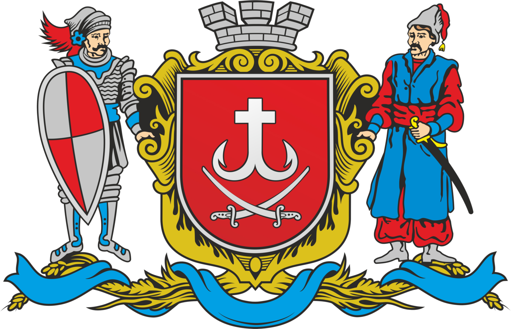
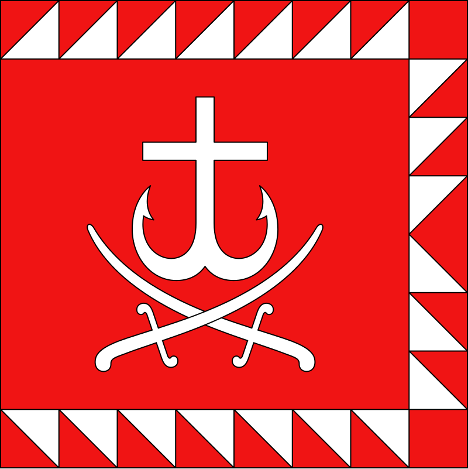
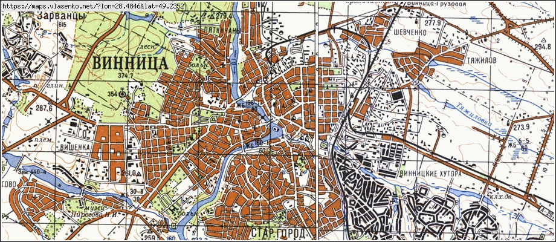
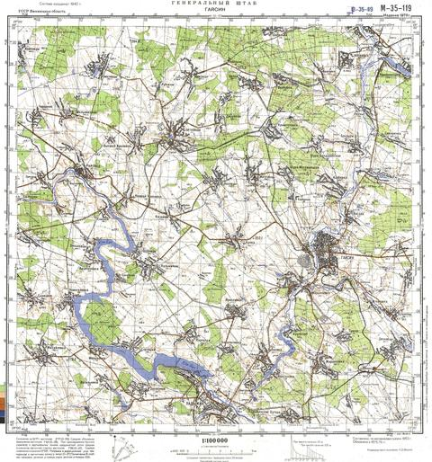
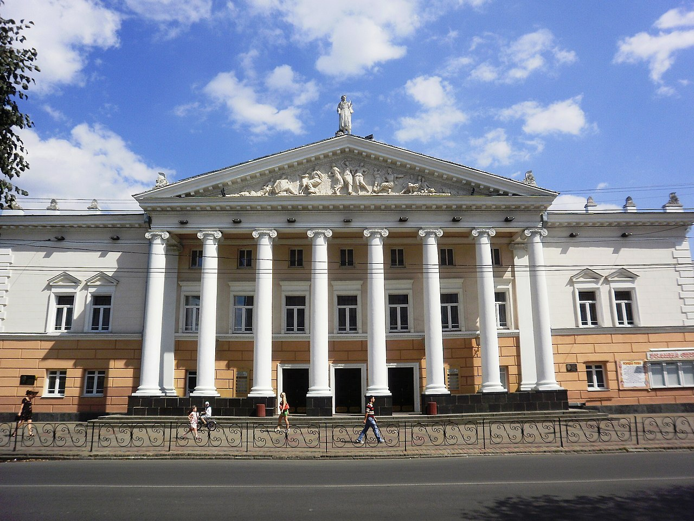
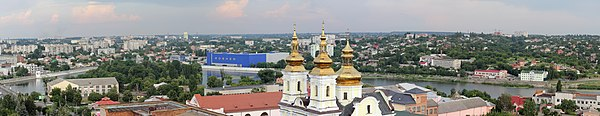

Вінниця!
Вступ
Ві́нниця — місто у центрі України, на берегах Південного Бугу, адміністративний центр Вінницької області, Вінницького району та Вінницької міської громади, значний історичний осередок східного Поділля, центр Вінницької агломерації.
Символіка
Символікою міста Вінниці є Герб, Великий Герб та Хоругва (Прапор) міста Вінниці.
Герб
16 травня 1993 року рішенням № 28 сесія Вінницької міської ради затвердила Герб: обрамований суцільною срібною стрічкою щит червоного кольору; у червоному полі срібний хрест, нижня частина якого розділена і переходить у два гачки, один вліво, інший вправо, відвернені. Під ним — дві срібні схрещені лезом назовні шаблі. Хрест, нижня частина якого розділена і переходить у два гачки, один вліво, інший вправо, відвернені — давній знак, що дійшов до нас у стилізованому вигляді. Має історичну традицію вживання з XVII століття. Дві схрещені шаблі символізували в історичному гербі прикордонне розташування Вінниці, на жителів якої було покладено обов'язки охорони міста та краю. Автори відновленого Герба Вінниці: художник Георгій Мельник, історики Юрій Савчук та Юрій Легун.
Великий Герб
Великий Герб міста Вінниці являє собою геральдичний щит. У червоному полі щита — срібний хрест, нижня частина якого розділена і переходить у два гачки, один вліво, інший вправо, відвернені. Під ними — дві срібні схрещені лезом назовні шаблі. Щит увінчано срібною міською короною та обрамовано золотим картушем. Щит підтримують: зліва — городовий козак доби Гетьманщини, справа — лицар доби Великого Князівства Литовського. Знизу Великий герб доповнює вінок золотого колосся, оповитого блакитною стрічкою. Срібна корона символізує адміністративний статус міста та його самоврядність, набуту у 1640 році. Лицар доби Великого Князівства Литовського відображає добу правління князів Коріатовичів, засновників Подільського князівства та міста Вінниці. Городовий козак доби Гетьманщини символізує козацьку звитягу полкового міста Вінницького полку. Золоте колосся відображає добробут та багатство краю. Блакитна стрічка — символ річки Південний Буг, на якій розташоване місто. Поєднання цих кольорів відтворює українську національну символіку. В центрі — Герб міста Вінниці.
Прапор(Хоругва)
16 травня 1993 року рішенням № 1108/28 сесії Вінницької міської ради затверджено прапор міста. Автор прапора — вінницький історик та геральдист Юрій Легун. Хоругва (Прапор) міста Вінниці являє собою прямокутне полотнище червоного кольору зі співвідношенням сторін 2:3. Хоругва оточена по периметру (крім сторони біля древка) лиштвою, яку розбито на рівні трикутники червоної та білої барви. Ширина лиштви виносить 1/10 сторони хоругви. Посередині хоругви — зображення Герба міста Вінниці. Лицьовий та зворотний боки — однакові. Форма полотнища відповідає вимогам міського прапоротворення в Україні. Центральні фігури хоругви повторюють символіку Герба міста Вінниці. Кольори хоругви символізують, виходячи із канонів вексилології та геральдики, мужність, хоробрість, безстрашність (червоний) та чистоту (срібний). З нагоди Дня міста на Замковій горі 11 вересня 2021 року замайорів найбільший прапор Вінниці.
Географія
Місто Вінниця розташоване на берегах річки Південний Буг, яка перетинає місто з півночі на південь. Загалом в місті нараховують ще 64 малих річок, загальна протяжність яких у сім разів перевищує довжину Південного Бугу в межах Вінниці. Відстань до столиці України автошляхами — понад 265 км, залізницею — 221 км. До столиці є можливість дістатися швидкісним поїздом за 2 години, швидким — за 2,5-3 години, автомобілем — за 3,5—4 години (автошляхом E50,з яким збігаються E583 та Р17)
Частини міста
Історично склалися такі частини міста як Вишенька, Замостя, Каліча, Тяжилів, ВПЗ (місцевість), Академмістечко, Слов'янка, Сабарів, Пирогове, Малі Хутори, Старе місто, Хутір Шевченка, Єрусалимка, П'ятничани, Корея, Поділля, Масив, Військове містечко, Садки, Крива, Царське село, Академічний, Олієжир. У 2018—2020 роках до міста Вінниця були приєднані села: Десна, Стадниця, Малі та Великі Крушлинці, Гавришівка, Вінницькі Хутори та утворено адміністративну одиницю — Вінницьку міську територіальну громаду[28] [29]
Парки і сквери
Вінниця — дуже зелене місто з численними скверами та парками. Так, у самому середмісті, у районі водонапірної вежі лежить Європейська площа, яка сформувалася довкола міського саду кінця ХІХ — початку ХХ століть (так званий «Бульвар»). Більшість університетів міста теж знаходяться у зелених зонах (напр. парк Вінницького медичного університету імені Миколи Пирогова). Головний Центральний міський парк імені Миколи Леонтовича — пам'ятка садово-паркового мистецтва загальнодержавного значення, площа якого становить 40 га. На території парку розташовані пам'ятники воїнам-афганцям, січовим стрільцям, загиблим поліцейським, пам'ятні знаки на місці розстрілів НКВС у 1930-х років та колишнього польського кладовища. Також є «Алея славетних земляків», працюють об'єкти дозвілля та відпочинку: Центральний міський стадіон, льодовий клуб, планетарій, виставка «Міні-Вінниця», літні театральний і танцювальний майданчики, численні атракціони й ігрові автомати, заклади харчування тощо. У період зимових свят тут розташовується центральна ялинка міста. На житловому масиві Вишенька забудова 1970—1990-х років, тут розташований однойменний Вишенський парк із площею понад 90 га. Неподалік — Вишенські озера, ботанічний сад «Поділля» і територія Національного музею-садиби М. І. Пирогова. З іншого боку масиву розташовується Лісопарк, поєднаний із П'ятничанським заказником, на півночі міста — подільський зоопарк. Посеред Південного Бугу розташований острів Кемпа (в радянські часи відомий також як Фестивальний), біля якого реконструйовано набережну Рошен. У літній період (з кінця квітня по жовтень) працює найбільший у Європі фонтан на відкритій водоймі зі світломузичним шоу.
Культура
Театри і музика
Вінницький державний академічний музично-драматичний театр ім. М. К. Садовського було збудовано 1910 року за проєктом архітектора Григорія Артинова. Вагомий внесок у будівництво театру внесла Тетяна Дмитрівна Лентовська (також відома як Ухтомська), дружина відомого одеського скульптора Бориса Едвардса. Саме Лентовська очолила дирекцію театру після його відкриття. Трупа першого сезону була невелика. У ній нараховувалося тільки 25 акторів. Першими зарубіжними артистами, які виступили у новому театрі, стали артисти італійської опери брати Гонсалець. Їхні гастролі відбулися на початку 1911 року. Починаючи від 1933 року в місті працює постійна трупа, яка не переривала вистави навіть під час Другої світової війни. 28 жовтня 2004 року музично-драматичний театр ім. М. Садовського отримав статус державного академічного театру. Вінницький академічний обласний театр ляльок «Золотий ключик» — один з найстаріших в Україні, заснований в жовтні 1938 р. Майже 40 років театр очолював лялькар, заслужений діяч мистецтв України Володимир Шестак. Вінницькі лялькарі першими в Україні здійснили постановку вистави для дорослих українською мовою за п'єсою, спеціально написаною для театру ляльок («Боги, чорти, люди» Г. Усача за І. Котляревським). На базі театру проходить Міжнародний фестиваль театрів ляльок «Подільська лялька», який вперше відбувся у 1999 році. На фестивалі побували театральні колективи України, Болгарії, Польщі, Румунії, Грузії, Молдови, Литви, Австрії. За видатні досягнення, пов'язані з розвитком вітчизняної культури, творчому колективу театру в 2007 році надано статус академічного. Вінницька обласна філармонія ім. Миколи Леонтовича[4] започаткована у 1937 р., перший заклад на Вінниччині, який планував, організовував та контролював професійну концертну діяльність. У 1975 р. філармонію очолив 27-річний Анатолій Левицький, який спершу пропрацював там 25 років, а згодом повернувся до керівництва закладом у 2008 році. У Центральному парку існують концертний зал «Райдуга» та літній театр, які місто планує реконструювати для потреб культурної інфраструктури. Національний музей-садиба М. І. Пирогова — місце життя та діяльності всесвітньо відомого хірурга, що зробив неаби який вклад до світової медицини.
Фестивалі
Особлива увага приділена в місті і заходам з популяризації класичної музики. Так, вже традиційним став осінній Міжнародний органний фестиваль під назвою «Музика в монастирських мурах» — щороку українські органісти разом із закордонними колегами збираються в римо-католицькому костелі Святої Діви Марії Ангельської й виконують шедеври органної музики. Ідейним натхненником, організатором і безпосереднім учасником заходу є художній керівник фестивалю, заслужений діяч мистецтв України Георгій Курков[169]. Починаючи з травня 1993 року Вінницькою обласною філармонією за підтримки місцевих органів влади проводиться Міжнародний музичний фестиваль класичної музики імені П. І. Чайковського та Н. Ф. фон Мекк, який має статус міжнародного. До участі в мистецькій події запрошуються провідні професійні колективи та виконавці України і зарубіжжя. Обов'язковою умовою участі у фестивалі є виконання творів Петра Чайковського та композиторів епохи романтизму XIX століття. З 1992 року щовесни у Вінниці проходить Дитячо-юнацький естрадний конкурс «Музична парасолька». Мета конкурсу виявити талановиту молодь в жанрах сучасної естради. Конкурс проводиться у трьох номінаціях: естрадний вокал, вокальні ансамблі та хореографічні колективи, а також у трьох вікових категоріях: 6-10 років, 11-14 років, 15-18 років. Автор ідеї проведення конкурсу — актор театру і кіно, заслужений артист України Олександр Нємченко. З 2001 року конкурс здобув статус міжнародного. Участь у конкурсі беруть більше 700 учасників, вокалісти та хореографічні колективи з країн ЄС, а також Грузії, Казахстану, Молдови та багатьох регіонів України. «Музична парасолька» стала справжньою візитівкою Вінниччини, є одним із найпрестижніших вокально-хореографічних конкурсів України. Одним із головних музичних брендів Вінниці є найстаріший джазовий фестиваль незалежної України «VINNYTSIA JAZZFEST»[5], на якому починаючи з 1996 року виступили понад 800 провідних джазових музикантів із 37 країн світу. У Вінниці грала ціла плеяда американських легенд: Сайрус Честнат, Ел Фостер, Джессі Джонс, Шерон Кларк, Ліза Генрі, Джо Сесс, Деніз Перьє, Луіз Сімас. Незабутнім був концерт оркестру Олега Лундстрема і людини-легенди Георгія Гараняна. Вінниця бачила величезну кількість литовських музикантів, зокрема, культового барабанщика Володимира Тарасова і розкішний Біг-бенд «Старого підвалу». У скарбничці знакових досягнень Вінницького джазового фестивалю є і рекорд України. У 2007 році вперше в Україні джазовий фестиваль вийшов у прямому радіо- і телевізійному ефірі. А завдяки найдовшій прямоефірній трансляції культурологічного проекту — 11 годин 40 хвилин — «VINNYTSIA JAZZFEST» та Вінницька облдержтелерадіокомпанія «Вінтера» увійшли до Книги Рекордів України. «МіжНародний ВІННИЦІЯнський» фестиваль — унікальний фестиваль короткого та ультракороткого відео в жанрі комедії, проводиться із 2007 року. Він сприяє залученню до світу мистецтва і творчого процесу молоді України, країн Європи та Америки, виявленню та популяризації кращих зразків аматорської та професійної молодіжної творчості у жанрі комедійного та пародійного кіно. За роки існування фестивалю, його гостями стали відомі актори, режисери: Давид Черкаський, Віктор Андрієнко, Володимир Горянський, Руслана Писанка, Олексій Горбунов, Анатолій Борсюк, комік-трупа «Маски», журнал відео коміксів «Каламбур», Василь Вірастюк, представники культових телевізійних програм, журналісти, телеведучі. Започатковано у Вінниці ще один Всеукраїнський фестиваль військово-історичної реконструкції «Вінниця-столиця УНР» присвячений подіям Української Революції 1917—1921 років та проводиться до Дня захисників та захисниць України. Під час цієї події влаштовують виставки військової техніки та реконструйованих машин різних періодів минулого століття, одягу військових часів Української революції, відтворюють бої Армії УНР проти ворога. У рамках святкування Дня Незалежності України у Вінниці проходить Фестиваль сучасного українського мистецтва «Подільська пектораль», який збирає разом майстрів різних народних ремесел міста й області. Завдяки «Параду короваїв», який проводився під час фестивалю, Вінниця потрапила до Книги Рекордів України у категорії «Кондитерські вироби. Масові заходи». Вінничани та гості міста долучаються до різноманітних тематичних флешмобів, насолоджуються українськими піснями й танцями, беруть участь у майстер-класах з рогозоплетіння, подільської витинанки, гончарства, виготовлення ляльок-мотанок. У Вінниці з червня 2015 року в пам'ять про загиблого військового кухаря-пацифіста проводиться Фестиваль польової кухні пам'яті Тараса Сича. Це не гастрофест у звичному розумінні слова, захід має патріотичне й благодійне спрямування — всі зібрані під час фестивалю гроші використовуються для допомоги українським захисникам. Під час дійства працює експозиція зброї та військової техніки, а також виставка, присвячена пам'яті Тараса Сича. Не обходиться без концерту патріотичної пісні та тематичних майстер-класів. Традиційно у травні у Вінниці проходить літературно-мистецький фестиваль «VinBookFest». Метою фестивалю є популяризація української книги та сприяння культурному розвитку міста. Цей захід збирає сучасних майстрів слова, музикантів, письменників. Під час мистецької події автори презентують свої книги, поети декламують вірші, видавництва та книгарні пропонують нові книги, майстри організовують цікаві творчі локації.
Музеї
Музеї Вінниці
- Комунальний заклад «Музей Вінниці»
- Вінницький обласний краєзнавчий музей
- Вінницький обласний художній музей
- Військово-історичний музей Повітряних сил Збройних сил України
- Національний музей-садиба М. І. Пирогова
- Вінницький літературно-меморіальний музей М. М. Коцюбинського
- Музей гончарного мистецтва О. Г. Луцишина
- Музей пам'яті воїнів Вінниччини
- Музей вінницького трамвая
- АвтоМотоВелоФотоТелеРадіо Музей
- Музей української марки ім. Якова Балабана
- Музей моделей транспорту
- Музей Голокосту на Вінниччині
- Музей єврейського побуту
Архітектура
Забудова історичного центру Вінниці характеризується низкою цікавих тенденцій і особливостей. Попри той факт, що згідно з існуючою історіографічною традицією дату заснування міста пов'язують з князями Коріатовичами та Синьоводською битвою 1362 року, перші поселення поруч з місцем впадіння річки Віннички в Південний Буг, ймовірно, існували ще до цієї події . Орієнтовний час появи укріпленого замку у Вінниці на лівому березі Південного Бугу припадає на 1360-90-ті роки, цим же часом датуються перші згадки Вінниці в літописах. Новий замок, що був закладений Костянтином Івановичем Острозьким в 1512 році на лівобережній скелі (Замкова гора), проіснував до 1580 року і був спалений татарами під час чергового нападу на місто. Формування стійкої планувальної структури Вінниці почалося лише з XVI століття після утворення Речі Посполитої (1569 р.). Значною позитивною подією стало перетворення міста у 1598 р. в адміністративний центр Брацлавського воєводства. І зважаючи на прикордонне положення Брацлавщини, зросла потреба в розбудові та модернізації оборонних укріплень. Нове становище міста посприяло також торговельно-економічному, культурному та архітектурно-просторовому розвитку міста[180]. В 1604 році за сприяння тодішнього старости Валентія-Олександра Калиновського завершено спорудження нової фортеці на острові Кемпа. У 1611 — 1613-х рр. В. Калиновський зробив вагому пожертву на діяльність ордену Єзуїтів, що оселилися у Вінниці. Після пожежі 1613 року на правому березі Південного Бугу починається будівництво архітектурного комплексу монастиря Єзуїтів, яке тривало практично до 1648 року. Комплекс монастиря складався з костелу, колегіуму і конвікту (гуртожитку). За стінами ансамблю єзуїтського монастиря був розташований монастир домініканців, який тривалий час був дерев'яним. Згодом будівлі єзуїтського і домініканського монастирів були об'єднані в єдину фортифікаційну систему з оборонним муром та вежами під назвою Мури, які стали осердям для Нової — правобережної — частини міста. Вінниця в XVI — XVIII століттях зростала за рахунок хаотичної приватної одноповерхової дерев'яної забудови, що було характерно як для лівобережних (Старе місто), так і для правобережних (Нове місто) кварталів Вінниці. Місто в цей час мало нерегулярну планувальну структуру. Головним структурним елементом міста стала Єрусалимка — квартал місцевої єврейської бідноти, що є взірцем т. зв. «єврейського містечкового бароко» кінця XVIII століття, притаманного для Східного Поділля. Наприкінці XIX — початку XX століття у Вінниці, як і повсюдно в тодішній Україні панівним є еклектизм, крім того характерною особливістю архітектурного обличчя історичного центру Вінниці стало використання у міській житловій і громадській архітектурі в 1910—30-х рр. загальноєвропейських модних архітектурних стилів, у першу чергу, стилю модерн (кол. готель «Савой», будинки на вулицях Миколи Оводова, Григорія Сковороди тощо), а також конструктивізму (кінотеатр на Соборній, 35, зараз ім. М. Коцюбинського, арх. Р. М. Риков, у 1950-ті перебудований).
За СРСР у місті дещо перебудовано у 1950—60-ті рр. (в тому числі у т. зв. сталінському бароко), а також збудовано чимало громадських будівель (залізничний вокзал, музично-драматичний театр, палац піонерів (архітектор М. З. Гуревич), поштамт, спортивний комплекс) та житлових комплексів (Вишенька)[181]. За незалежності (від кінця 1990-х рр.) у місті будуються культові споруди, торговельні комплекси, нові житлові будинки тощо. У Вінниці нараховується 28 пам'яток (43 об'єкти) історії, включених до реєстру. На території Вінниці перебувають під охороною держави 13 пам'яток археології. Перелік пам'яток архітектури і містобудування Вінниці нараховує 121 об'єкт, з яких 11 — національного значення.
Найвизначніші історико-архітектурні пам'ятками Вінниці
- Домініканський монастир, 1624 — дерев'яний, входив до складу оборонного комплексу Мури (комплекс укріплень XVII ст.). В 1760 році за проєктом італійського архітектора Паоло Фонтани перебудований в цегляний костел. Монастир закрито в 1831 році після польського Листопадового повстання. Збереглися: костел, печери і оборонна вежа. До 1991 року використовувався як зал органної музики. Нині — Свято-Преображенський собор на центральній вулиці міста.
- Францисканський костел Святої Діви Марії Ангельської, 1760 — цегляний, прямокутний. Збудований в стилі тосканського бароко. Збереглися фрагменти настінного живопису XVIII ст.
- Єзуїтський монастир, 1610—1617 — входив до складу оборонного комплексу Мури. На його території: костел, колегіум, келії. Нині — краєзнавчий музей і обласний архів.
- Миколаївська церква, 1746 (дзвіниця, XIX ст.) — дерев'яна, триглава. Під час реставрації 1970 року відновлені форма та основні конструкції, аркада-галерея. Споруда — один з найкращих зразків народної дерев'яної архітектури. Поряд — відреставрована дзвіниця. Тепер — філіал краєзнавчого музею.
- Садиба в П'ятничанах, XVIII ст. — до комплексу входять споруди XVIII ст.: палац, флігель, павільйон. Розміщені в парку серед численних порід хвойних та листяних дерев.
У сучасній Вінниці значне число пам'ятників. Місцеві монументи присвячені Героям Небесної Сотні та російсько-української війни, жертвам Голодомору та Чорнобильської трагедії; знаковим постатям української історії (Тарас Шевченко), видатним діячам політики, культури і науки, життя і творчість яких безпосередньо пов'язані з містом або Вінниччиною (Михайло Коцюбинський, Василь Стус, Микола Леонтович, Симон Петлюра, Михайло Грушевський, Григорій Артинов, Микола Пирогов). До яскравих монументів радянської доби належать: Меморіал Визволення (1944), пам'ятник М. І. Пирогову (1971); до прикметних монументів часів Незалежності (після 1991 року) — пам'ятник Василю Стусу (2002) і пам'ятник українській пісні (2005).
________________________________________________________________________________________________________________________
Maecenas lacinia felis nec placerat sollicitudin. Quisque placerat dolor at scelerisque imperdiet. Phasellus tristique felis dolor.
Maecenas elementum in risus sed condimentum. Duis convallis ante ac tempus maximus. Fusce malesuada sed velit ut dictum. Morbi faucibus vitae orci at euismod. Integer auctor augue in erat vehicula, quis fermentum ex finibus.
Mauris pretium elit a dui pulvinar, in ornare sapien euismod. Nullam interdum nisl ante, id feugiat quam euismod commodo. Sed ultrices lectus ut iaculis rhoncus. Aenean non dignissim justo, at fermentum turpis. Sed molestie, ligula ut molestie ultrices, tellus ligula viverra neque, malesuada consectetur diam sapien volutpat risus. Quisque eget tortor lobortis, facilisis metus eu, elementum est. Nunc sit amet erat quis ex convallis suscipit. ur ridiculus mus.